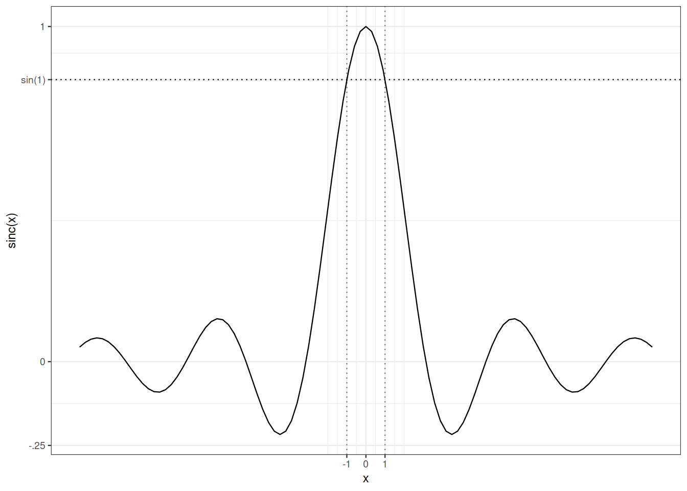

15 Convergence en loi
15.1 Motivation
Rappelons Leçon 1. Considérons des lois binomiales de paramètres \((n, \lambda/n)\) et une loi de Poisson de paramètre \(\lambda\). L’inspection graphique des fonctions de masse suggère que, lorsque \(n\) croît, les lois binomiales de paramètres \((n, \lambda/n)\) ressemblent de plus en plus à la loi de Poisson de paramètre \(\lambda\). La comparaison des fonctions génératrices des probabilités est plus convaincante. La fonction génératrice des probabilités de la loi binomiale de paramètres \((n, \lambda/n)\) est \(s \mapsto (1 +\lambda(s-1)/n )^n\). Lorsque \(n\) tend vers l’infini, les fonctions génératrices des probabilités des binomiales convergent ponctuellement vers la fonction génératrice des probabilités de la loi de Poisson de moyenne $: $ \(s \mapsto \exp(\lambda(s-1))\). Dans Leçon 1, nous avons vu d’autres exemples de lois qui tendent à ressembler à certaines lois limites lorsque certains paramètres varient.
Dans Leçon 14, nous avons muni l’ensemble \(L_0(\Omega, \mathcal{F}, P)\) de topologies (\(L_p\), convergence presque sûre, convergence en probabilité). Dans cette leçon, nous considérons l’ensemble des lois de probabilité sur un espace mesurable \((\Omega, \mathcal{F})\). Cet ensemble peut être muni de diverses topologies. Nous nous concentrerons sur la topologie définie par la convergence en loi, également appelée convergence faible.
Dans Section 15.2), nous introduisons les convergences faible et vague pour des suites de lois de probabilité. Dans Section 15.3), la convergence faible induit la définition de la convergence en loi pour des variables aléatoires pouvant vivre sur des espaces de probabilité différents (comme nos scores d’occupation dans Leçon 1).
Section 15.4) est consacrée au théorème de Portmanteau. Ce théorème énumère plusieurs caractérisations alternatives et équivalentes de la convergence en loi. Des caractérisations alternatives sont utiles à deux titres : elles peuvent être plus faciles à vérifier que la caractérisation utilisée dans la définition ; elles peuvent offrir un champ d’applications plus large.
Dans Section 15.5), nous énonçons et démontrons le théorème de continuité de Lévy. Le théorème de continuité de Lévy relie la convergence en loi à la convergence ponctuelle des fonctions caractéristiques : les fonctions caractéristiques nous permettent non seulement d’identifier les lois de probabilité, elles sont aussi déterminantes pour la convergence. Cela pourrait constituer une ligne de plus dans l’énoncé du Théorème 15.1). Mais le théorème de continuité de Lévy se distingue car il fournit une preuve concise du théorème central limite pour des sommes normalisées de variables aléatoires i.i.d. centrées. C’est le contenu de Section 15.8).
15.2 Convergence faible, convergence vague
La convergence faible de mesures de probabilité évalue la proximité de mesures de probabilité en comparant leur action sur une collection de fonctions tests.
Remarque 15.1. Nous verrons qu’il existe une certaine flexibilité dans le choix de la classe de fonctions tests.
Mais ce choix n’est pas illimité.
Si nous restreignons la collection de fonctions tests aux fonctions continues à support compact (qui sont toujours bornées), nous obtenons une notion de convergence différente.
Exemple 15.1 Considérons la suite de masses de probabilité sur les entiers \((\delta_n)_{n \in \mathbb{N}}\). Cette suite converge vaguement vers la mesure nulle. Elle ne converge pas faiblement.
La question suivante mérite réflexion.
15.3 Convergence en loi
Pour vérifier ou utiliser la convergence en loi, de nombreuses caractérisations équivalentes sont disponibles. Certaines d’entre elles sont énumérées dans le théorème de Portmanteau.
15.4 Théorème de Portmanteau
La liste suivante de caractérisations équivalentes de la convergence faible n’est pas exhaustive.
En anglais comme en français, un portemanteau est une valise.
Preuve. Les implications \(1) \Rightarrow 2) \Rightarrow 3)\) sont évidentes. Le théorème de continuité de Lévy, résultat majeur de Section 15.5) entraîne que \(3) \Rightarrow 1)\).
\(4)\).
Le fait que \(5) \Leftrightarrow 6)\) découle du fait que le complémentaire d’un fermé est un ouvert.
\(5)\) et \(6)\) impliquent \(7)\) : \[ \limsup_n P_n(\overline{A}) \leq P(\overline{A}) = P(A^\circ) \leq \liminf_n P_n(A^\circ) \, . \] Par monotonie : \[ \liminf_n P_n(A^\circ) \leq \liminf_n P_n (A) \leq \limsup_n P_n(A) \leq \limsup_n P_n (\overline(A)) \, . \] En combinant, on obtient \[ \lim_n P_n(A) = \liminf_n P_n (A) = \limsup_n P_n(A) = P(A^\circ) = P(\overline{A}) \, . \]
Vérifions que \(3) \Rightarrow 5)\). Soit \(F\) un fermé de \(\mathbb{R}^k\). Pour \(x\in \mathbb{R}^k\), notons \(\mathrm{d}(x,F)\) la distance de \(x\) à \(F\). Pour \(m \in \mathbb{N}\), posons \(f_m(x) = \big(1 - m \mathrm{d}(x, F)\big)_+\). La fonction \(f_m\) est \(m\)-lipschitzienne, minorée par \(\mathbb{I}_F\), et pour tout \(x \in \mathbb{R}^k\), \(\lim_m \downarrow f_m(x)= \mathbb{I}_F(x)\).
La convergence faible de \(P_n\) vers \(P\) implique \[ \lim_n \mathbb{E}_{P_n} f_m = \mathbb{E}_P f_m \] d’où, pour tout \(m \in \mathbb{N}\), \[ \limsup_n \mathbb{E}_{P_n} \mathbb{I}_F \leq \mathbb{E}_P f_m \, . \] En prenant la limite du côté droit, on obtient \[ \limsup_n P_n(F) = \limsup_n \mathbb{E}_{P_n} \mathbb{I}_F \leq \lim_m \downarrow \mathbb{E}_P f_m = \mathbb{E}_P \mathbb{I_F} = P(F) \, . \]
Supposons maintenant que \(7)\) soit vérifiée. Montrons que cela entraîne \(1)\).
Soit \(f\) une fonction bornée continue. Sans perte de généralité, supposons que \(f\) est non négative et majorée par \(1\). Rappelons que pour toute mesure \(\mu\) \(\sigma\)-finie \[ \int f \mathrm{d}\mu = \int_{[0,\infty)} \mu\{f > t\} \mathrm{d}t \, . \] Cela vaut pour toutes les \(P_n\) et \(P\). Ainsi \[ \mathbb{E}_{P_n} f = \int_{[0,\infty)} P_n \{ f > t \} \mathrm{d}t \] Comme \(\overline{\{ f > t\}}= \{ f \geq t\}\), \(\overline{\{ f > t\}} \setminus \{ f > t\}^\circ = \{ f = t\}\). L’ensemble des valeurs \(t\) telles que \(P \{ f = t\}>0\) est au plus dénombrable et donc de mesure de Lebesgue négligeable. Soit \(E\) son complémentaire. Pour \(t\in E\), \(\lim_n P_n\{ f> t\} = P\{f >t\}\). \[\begin{align*} \lim_n \mathbb{E}_{P_n} f & = \lim_n \int_{[0, 1]} P_n \{ f >t \} \mathrm{d}t \\ & = \lim_n \int_{[0, 1]} P_n \{ f >t \} \mathbb{I}_E(t) \mathrm{d}t \\ & = \int_{[0, 1]} \lim_n P_n \{ f >t \} \mathbb{I}_E(t) \mathrm{d}t \\ & = \int_{[0,1]} P\{f >t\} \mathbb{I}_E(t) \mathrm{d}t \\ & = \int_{[0,1]} P\{f >t\} \mathrm{d}t \\ & = \mathbb{E}_P f \, . \end{align*}\]
Pour des mesures de probabilité sur \((\mathbb{R}, \mathcal{B}(\mathbb{R}))\), la convergence faible est déterminée par les fonctions de répartition cumulatives. C’est parfois pris comme définition de la convergence faible dans les ouvrages élémentaires.
Pour des mesures de probabilité sur \((\mathbb{R}, \mathcal{B}(\mathbb{R}))\), la convergence faible est également déterminée par les fonctions quantiles.
Démontrer la proposition Proposition 15.1.
Remarque 15.2. Les variables aléatoires \((X_n)_n\) et \(X\) peuvent vivre sur des espaces de probabilité différents.
Lorsque les variables aléatoires \(X_n\) sont réelles, Proposition 15.2 découle facilement de la proposition Proposition 15.1.
Preuve. Posons \(\Omega= [0,1], \mathcal{F}=\mathcal{B}(\mathbb{R})\) et soit \(\omega\) uniformément distribué sur \(\Omega = [0,1]\). Posons \(Y_n = F_n^\leftarrow(\omega)\) et \(Y = F^\leftarrow(\omega)\).
Alors, pour chaque \(n\), \[ P \Big\{ Y_n \leq t \Big\} = P\Big\{\omega : F_n^\leftarrow(\omega) \leq t \Big\} = P\Big\{\omega : \omega \leq F_n(t) \Big\} = F_n(t) \] de sorte que \(Y_n \sim F_n\). Et par le même argument, \(Y \sim F\).
Comme une fonction non décroissante admet au plus dénombrablement de discontinuités, \[ P\Big\{\omega : F^\leftarrow\text{ est continue en }\omega \Big\}=1\,. \] Supposons maintenant que \(\omega\) soit un point de continuité de \(F^{\leftarrow}\). Alors, par la proposition Proposition 15.1, \(\lim_n F_n^{\leftarrow}(\omega) = F^\leftarrow(\omega)\). Cela se traduit par \[ P \Big\{\omega : \lim_n Y_n(\omega) =Y(\omega) \Big\} = 1 \, . \]
15.5 Théorème de continuité de Lévy
Remarque 15.3. Le Théorème 15.2 affirme que la convergence faible de mesures de probabilité est caractérisée par un très petit sous-ensemble de fonctions bornées continues. Pour garantir la convergence faible de \((P_n)_n\) vers \(P\), il suffit de vérifier que \(\mathbb{E}_{P_n}f \to \mathbb{E}_Pf\) pour les fonctions \(f\) de la famille \(\{ \cos(t \cdot), \sin(t \cdot) : t \in \mathbb{R} \}\). Ces fonctions sont bornées et infiniment dérivables.
Soient \((X_n)_n\), \(X\) et \(Z\) définies sur le même espace de probabilité. Si \((X_n)_n\), \(X\) et \(Z\) sont des variables aléatoires telles que pour tout \(\sigma>0\), \(X_n + \sigma Z \rightsquigarrow X+\sigma Z\), alors \(X_n \rightsquigarrow X\).
Preuve. Soit \(h\) bornée par \(1\) et \(1\)-lipschitzienne \[\begin{align*} \Big| \mathbb{E} h(X_n) -h(X) \Big| & \leq \Big| \mathbb{E} h(X_n) - h(X_n + \sigma Z) \Big| \\ & \qquad + \Big| \mathbb{E} h(X_n + \sigma Z) - h(X + \sigma Z) \Big| \\ & \qquad + \Big| \mathbb{E} h(X + \sigma Z) - h(X) \Big| \end{align*}\] Le premier et le troisième terme se traitent de la même manière.
Soit \(\epsilon >0\), \[\begin{align*} \Big| \mathbb{E} h(X_n) - h(X_n + \sigma Z) \Big| & \leq \Big| \mathbb{E} (h(X_n) - h(X_n + \sigma Z)) \mathbb{I}_{\sigma |Z|>\epsilon} \Big| \\ & \qquad + \Big| \mathbb{E} (h(X_n) - h(X_n + \sigma Z)) \mathbb{I}_{\sigma |Z|\leq\epsilon} \Big| \\ & \leq 2 P\{\sigma |Z|>\epsilon\} + \epsilon \, . \end{align*}\] En combinant les différentes majorations, on obtient \[\begin{align*} \Big| \mathbb{E} h(X_n) -h(X) \Big| & \leq 2 P\{\sigma |Z|>\epsilon\} + \epsilon + \Big| \mathbb{E} h(X_n + \sigma Z) - h(X + \sigma Z) \Big| \end{align*}\] Le dernier terme du membre de droite tend vers \(0\) lorsque \(n\) tend vers l’infini. Le premier terme tend vers \(0\) lorsque \(\sigma\) tend vers \(0\).
Ainsi
\[ \limsup_n \Big| \mathbb{E} h(X_n) - h(X_n + \sigma Z) \Big| \leq \epsilon \, . \]
Preuve. \[\begin{align*} \int_{\mathbb{R}} |f_n(x) - f(x)| \mathrm{d}x & = \int_{\mathbb{R}} (f(x) - f_n(x))_+ \mathrm{d}x + \int_{\mathbb{R}} (f(x) - f_n(x))_- \mathrm{d}x \\ & = 2 \int_{\mathbb{R}} (f(x) - f_n(x))_+ \mathrm{d}x \, . \end{align*}\] Observons que \((f - f_n)_+ \leq f\), qui appartient à \(\mathcal{L}_1(\mathbb{R}, \mathcal{B}(\mathbb{R}), \text{Lebesgue})\). Et \((f-f_n)_+\) converge ponctuellement vers \(0\). Par le théorème de convergence dominée, \(\lim_n \int_{\mathbb{R}} |f_n - f| \mathrm{d}x =0\).
Pour tout \(A \in \mathcal{B}(\mathbb{R})\), \[ P_n(A) - P(A) = \int_{\mathbb{R}} \mathbb{I}_A (f_n -f) \leq \int_{\mathbb{R}} |f_n -f| \, . \] Nous avons prouvé plus que la convergence faible, à savoir \[ \lim_n \sup_{A \in \mathcal{B}(\mathbb{R})} |P_n(A) - P(A)| = 0 \, . \]
Preuve (Preuve du théorème de continuité). Supposons que les fonctions caractéristiques de \((X_n)_n\) convergent ponctuellement vers la fonction caractéristique de \(X\).
Soit \(Z\) une variable aléatoire gaussienne standard, indépendante de toutes les \((X_n)_n\) et de \(X\). Pour \(\sigma>0\), les lois de \(X_n + \sigma Z\) et \(X + \sigma Z\) ont des densités uniquement déterminées par les fonctions caractéristiques de \(X_n\) et \(X\). De plus, un argument de convergence dominée montre que les densités de \(X_n + \sigma Z\) convergent ponctuellement vers la densité de \(X + \sigma Z\). Par le lemme de Scheffé, cela entraîne que \(X_n + \sigma Z \rightsquigarrow X + \sigma Z\).
Comme cela vaut pour tout \(\sigma>0\), cela entraîne que \(X_n \rightsquigarrow X.\)
15.6 Affiner le théorème de continuité
Dans certaines situations, nous pouvons prouver qu’une suite de fonctions caractéristiques converge ponctuellement vers une certaine fonction, mais nous n’avons aucun candidat pour la loi limite. La question se pose de savoir si la limite ponctuelle des fonctions caractéristiques est la fonction caractéristique d’une certaine loi de probabilité ou autre chose.
La réponse peut être négative : si \(P_n = \mathcal{N}(0, n)\), la suite de fonctions caractéristiques est \(\big(t \mapsto \exp(-nt^2/2)\big)_n\), qui converge ponctuellement vers \(0\) sauf en \(0\) où elle vaut \(1\) tout au long. La limite n’est pas la fonction caractéristique d’une mesure de probabilité : elle n’est pas continue en \(0\).
Le théorème suivant tranche la question.
Nous admettons le théorème (important) suivant.
Puis
Nous utiliserons la majoration technique suivante, illustrée dans Figure 15.1 :
\[ \forall t \in \mathbb{R} \setminus[-1,1], \qquad \frac{\sin(t)}{t} \leq \sin(1) \leq \frac{6}{7}\, . \]
Preuve (Preuve du lemme de troncature). \[\begin{align*} \frac{1}{u}\int_0^u \big(1 - \operatorname{Re}\widehat{F}_n(v)\big) \mathrm{d}v & = \frac{1}{u}\int_0^u \Big(\int_{\mathbb{R}} \big(1 - \cos(v w)\big)\mathrm{d}F(w) \Big)\mathrm{d}v \\ & = \int_{\mathbb{R}}\int_0^u \frac{1}{u} \Big( \big(1 - \cos(v w)\big) \mathrm{d}v \Big)\mathrm{d}F(w) \\ & = \int_{\mathbb{R}} \Big( 1 - \frac{\sin(uw)}{uw} \Big)\mathrm{d}F(w) \\ & \geq \int_{|uw| \geq 1} \Big( 1 - \frac{\sin(uw)}{uw} \Big)\mathrm{d}F_n(w) \\ & \geq (1- \sin(1)) P \Big[\frac{-1}{u}, \frac{1}{u}\Big]^c \, \end{align*}\] où les deux inégalités découlent des bornes sur la fonction \(\operatorname{sinc}\).
Preuve (Preuve du lemme de compacité uniforme). Supposons que la suite \((\widehat{F}_n)_n\) converge ponctuellement vers une fonction \(\widehat{F}\) continue en \(0\).
Notons que \(\widehat{F}_n(0)=1\) pour tout \(n\), d’où, trivialement, \(1 =\lim_n \widehat{F}_n(0) = \widehat{F}(0)\).
Comme \(|\operatorname{Re}\widehat{F}_n(t)|\leq 1\), on a aussi \(|\operatorname{Re}\widehat{F}(t)|\leq 1\).
Fixons \(\epsilon>0\). Comme \(\widehat{F}\) est continue en \(0\), pour un certain \(u>0\), pour tout \(v \in [-u,u]\), \(0 \geq 1- \widehat{F}(u) \leq \epsilon/2.\) Ainsi, \[ 0 \leq \frac{1}{u}\int_0^u \big(1 - \operatorname{Re}\widehat{F}(v)\big) \mathrm{d}v \leq \epsilon/2 \, . \]
Par convergence dominée, \[ \lim_n \frac{1}{u}\int_0^u \big(1 - \operatorname{Re}\widehat{F}_n(v)\big) \mathrm{d}v = \frac{1}{u}\int_0^u \big(1 - \operatorname{Re}\widehat{F}(v)\big) \mathrm{d}v \leq \epsilon/2 \, . \]
Pour \(n\) suffisamment grand, \(0 \leq \frac{1}{u}\int_0^u \big(1 - \operatorname{Re}\widehat{F}_n(v)\big) \mathrm{d}v \leq \epsilon\).
En appliquant le lemme de troncature, pour \(n\) suffisamment grand, nous avons \[ P_n \Big[\frac{-1}{u}, \frac{1}{u}\Big]^c \leq 7 \epsilon \, . \] L’intervalle \(\Big[\frac{-1}{u}, \frac{1}{u}\Big]\) est compact.
Preuve (Preuve de la deuxième forme du théorème de continuité). Nous combinons le lemme de compacité uniforme et le théorème de Prokhorov-Le Cam. Sous les hypothèses de la deuxième forme du théorème de continuité, il existe une mesure de probabilité \(P\) (de fonction caractéristique \(\widehat{F}\)) et une sous-suite \((P_{n(k)})_{k \in \mathbb{N}}\) telle que \(P_{n(k)} \rightsquigarrow P \text{ lorsque } {k \to \infty}\). Cela entraîne \(\widehat{F}_{n(k)} \rightarrow \widehat{F} \text{ lorsque } {k \to \infty}\) ponctuellement. Cela entraîne aussi que \(\widehat{F}_n \rightarrow \widehat{F}\) ponctuellement pour toute la suite. Enfin, nous pouvons invoquer le Théorème 15.2) pour conclure \(P_{n}\rightsquigarrow P \text{ lorsque }{n \to \infty}\).
Remarque 15.4. Toutes les définitions et résultats de cette section peuvent être étendus au cadre \(k\)-dimensionnel pour tout \(k \in \mathbb{N}\).
15.7 Relations entre convergences
Les caractérisations alternatives de la convergence faible fournies par le théorème de Portmanteau (Théorème 15.1) facilitent la preuve de la proposition suivante.
La convergence en probabilité implique la convergence en loi.
Preuve. Supposons que \((X_n)_n\) converge en probabilité vers \(X\).
Soit \(h\) une fonction bornée lipschitzienne. Sans perte de généralité, supposons que \(|f(x)|\leq 1\) pour tout \(x\) et \(|f(x)-f(y)|\leq \mathrm{d}(x,y)\).
Soit \(\epsilon>0\). \[\begin{align*} \Big| \mathbb{E}h(X_n) - \mathbb{E}h(X) \Big| & = \Big| \mathbb{E}\Big[(h(X_n) - h(X) \mathbb{I}_{\mathrm{d}(X,X_n)> \epsilon}\Big] \\ & \qquad + \mathbb{E}\Big[(h(X_n) - h(X) \mathbb{I}_{\mathrm{d}(X,X_n)\leq \epsilon}\Big] \Big| \\ & \leq \mathbb{E}\Big[2 \mathbb{I}_{\mathrm{d}(X,X_n)> \epsilon} \Big] \\ & \qquad + \mathbb{E}\Big[ |h(X_n) - h(X)| \mathbb{I}_{\mathrm{d}(X,X_n)\leq \epsilon}\Big] \\ & \leq 2 P\big\{ \mathrm{d}(X,X_n)> \epsilon \big\} + \epsilon \, . \end{align*}\] La convergence en probabilité entraîne que \[ \limsup_n \Big| \mathbb{E}h(X_n) - \mathbb{E}h(X) \Big| \leq \epsilon. \] Comme cela vaut pour tout \(\epsilon >0\), pour toute fonction bornée lipschitzienne \(h\), \(\lim_n \Big| \mathbb{E}h(X_n) - \mathbb{E}h(X) \Big|=0\). Cela suffit à établir la convergence en loi de \((X_n)_n\).
15.8 Théorème central limite
Le théorème de continuité de Lévy (Théorème 15.2) est la pierre angulaire d’une preuve très concise de la version la plus simple du théorème central limite (TCL). Sous l’hypothèse d’intégrabilité au carré, le TCL affine les lois des grands nombres. Il affirme que, lorsque \(n\) tend vers l’infini, les fluctuations de la moyenne empirique \(\sum_{i=1}^n X_i/n\) autour de son espérance sont d’ordre \(1/\sqrt{n}\) et, une fois renormalisées, suivent une loi normale.
Preuve. Notons \(\widehat{F}\) la fonction caractéristique de la loi (commune) des variables aléatoires \(((X_i-\mu)/\sigma)_i\). Rappelons de Leçon 12, que les hypothèses de centrage et d’intégrabilité au carré impliquent que
\[ \widehat{F}(t) = \widehat{F}(0) + \widehat{F}'(0) t + \frac{\widehat{F}'(0)}{2} t^2 + t^2 R(t)= 1 - \frac{t^2}{2} + t^2 R(t) \] où \(\lim_{t \to 0} R(t)=0\). Notons \(\widehat{F}_n\) la fonction caractéristique de \(\sqrt{n} \left(\frac{S_n}{n} - \mu \right)/\sigma\). Fixons \(t \in \mathbb{R}\), \[ \widehat{F}_n(t) = \Big(\widehat{F}(t/\sqrt{n})\Big)^n = \Big(1 - \frac{t^2}{2n} + \frac{t^2}{n} R(t/\sqrt{n})\Big)^n \, . \] Lorsque \(n\to \infty\), \[ \lim_n \Big(1 - \frac{t^2}{2n} + \frac{t^2}{n} R(t/\sqrt{n})\Big)^n = \mathrm{e}^{- \frac{t^2}{2}} \, . \]
Au membre de droite, nous reconnaissons la fonction caractéristique de \(\mathcal{N}(0,1)\).
Remarque 15.5. Les conditions de l’énoncé du théorème permettent une preuve courte. Elles ne sont nullement nécessaires. Les termes de la somme n’ont pas besoin d’être identiquement distribués. Les termes de la somme n’ont pas besoin d’être indépendants. Une version du théorème de Lindeberg-Feller affirme que, sous des hypothèses légères, des sommes centrées et normalisées de variables aléatoires indépendantes intégrables au carré convergent en loi vers une loi gaussienne.
15.9 Dispositif de Cramér-Wold
Jusqu’ici, nous avons discuté des fonctions caractéristiques pour des variables aléatoires réelles. Mais les fonctions caractéristiques peuvent être définies pour des variables aléatoires vectorielles. Si \(X\) est une variable aléatoire à valeurs dans \(\mathbb{R}^k\), sa fonction caractéristique applique \(\mathbb{R}^k\) dans \(\mathbb{C}\) : \[\begin{align*} \mathbb{R}^k & \to \mathbb{C} \\ t & \mapsto \mathbb{E}\mathrm{e}^{i \langle t, X\rangle} \, . \end{align*}\]
L’importance des fonctions caractéristiques multivariées se reflète dans le dispositif suivant, dont la preuve est laissée au lecteur. Il consiste à adapter la preuve du Théorème 12.4).
Le Théorème 15.6) fournit un chemin court vers le théorème central limite multivarié.
15.10 Convergence faible et transformations
Dans Lesson Chapitre 12, nous avons introduit différentes caractérisations des lois de probabilité : fonctions génératrices des probabilités, transformées de Laplace, transformées de Fourier (fonctions caractéristiques), fonctions de répartition cumulatives, fonctions quantiles. Dans leur domaine de validité, toutes ces transformations sont déterminantes pour la convergence : si une suite de lois de probabilité converge faiblement, il en est de même (ponctuellement) de la suite correspondante de transformations, au moins aux points de continuité de la transformation limite.
Dans les deux théorèmes suivants, chaque variable aléatoire est supposée vivre sur un espace de probabilité (implicite).
Une suite de variables aléatoires non négatives \((X_n)_n\) converge en loi vers la variable aléatoire non négative \(X\) si et seulement si la suite des transformées de Laplace converge ponctuellement vers la transformée de Laplace de la loi de \(X\).
La preuve suit la dérivation du Théorème 15.2).
Comme les fonctions génératrices des probabilités permettent de retrouver les transformées de Laplace, le théorème suivant est un cas particulier de l’énoncé concernant les transformées de Laplace.
Une suite de variables aléatoires à valeurs entières \((X_n)_n\) converge en loi vers la variable aléatoire à valeurs entières \(X\) si et seulement si la suite des transformées de Laplace converge ponctuellement vers la transformée de Laplace de la loi de \(X\).
15.11 Remarques bibliographiques
Dudley (2002) traite de la convergence en loi en deux chapitres : le premier est consacré aux lois sur \(\mathbb{R}^d\) et au théorème central limite ; le second aborde des univers plus généraux. Dans le premier chapitre, le théorème central limite est étendu aux tableaux triangulaires, c’est-à-dire aux suites de variables aléatoires pas nécessairement identiquement distribuées (théorème de Lindeberg).
Dudley (2002) étudie la convergence en loi comme convergence de lois sur des espaces métriques séparables, c’est-à-dire dans un cadre beaucoup plus large que celui de ces notes. Le lecteur y trouvera une preuve complète du théorème de Prokhorov-Le Cam et une discussion approfondie de ses corollaires. Dans (Dudley, 2002), une grande partie de l’effort est consacrée à la métrization de la topologie de convergence faible. Le lecteur y trouvera aussi un panorama complet des arguments de représentation presque sûre.
La preuve du théorème de continuité de Lévy donnée ici est tirée de (Pollard, 2002).
L’utilisation de métrizations pour la convergence faible permet d’étudier la vitesse de convergence dans les théorèmes limites. Cela remonte au moins au théorème de Berry-Esseen (1942). Les approches quantitatives de la convergence faible ont pris un nouvel élan avec la popularisation de la méthode de Stein. Cette méthode vise des versions générales et quantitatives du théorème central limite (Chen, Goldstein, & Shao, 2011). Une introduction complète mais accessible à la méthode de Stein est (Ross, 2011).
Chen, L. H. Y., Goldstein, L., & Shao, Q.-M. (2011). Normal approximation by Stein’s method (p. xii+405). Springer, Heidelberg. https://doi.org/10.1007/978-3-642-15007-4
Dudley, R. M. (2002). Real analysis and probability (Vol. 74, p. x+555). Cambridge: Cambridge University Press.
Pollard, D. (2002). A user’s guide to measure theoretic probability (Vol. 8, p. xiv+351). Cambridge University Press, Cambridge.
Ross, N. (2011). Fundamentals of Stein’s method. Probab. Surv., 8, 210‑293. https://doi.org/10.1214/11-PS182